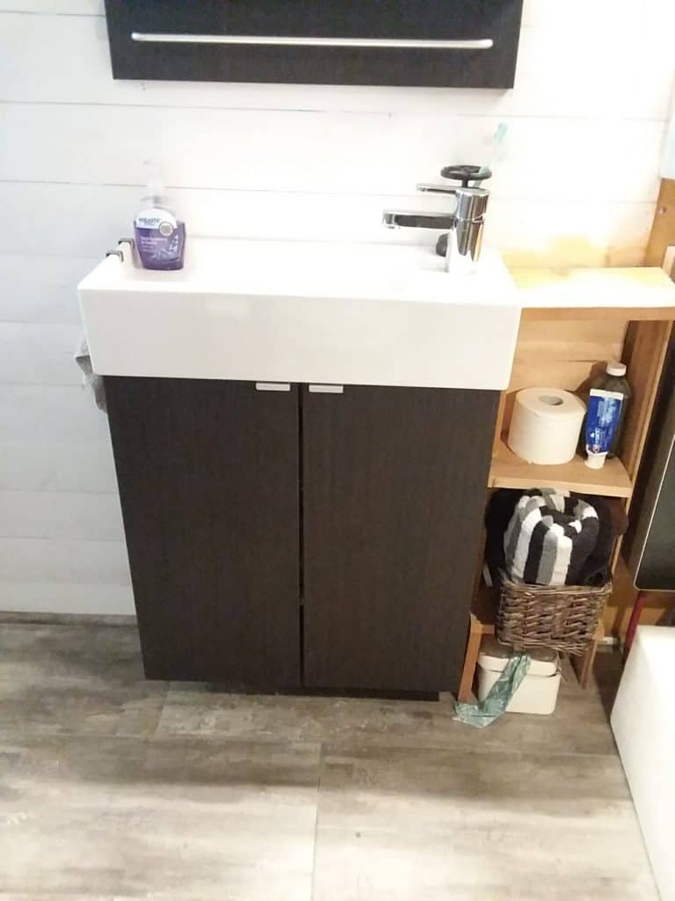
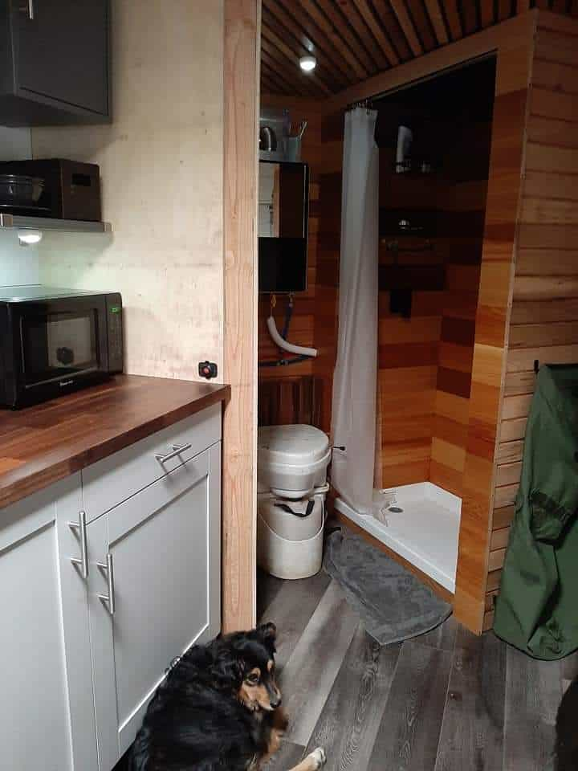

August 18, 2019

This article has been reviewed in accordance with our editorial policy.
One thing many people ask is how big of a bathroom you can put in a tiny house. My husband and I have been living tiny for several years now and I wanted to go over some popular bathroom dimensions.
So, what are tiny house bathroom dimensions? On average they are around 5' x 8' but they can be as small as 4' x 3' typically this is a wet bath, and as large as 8' x 8'. These dimensions will vary depending on what works best for you.
For some people, a big factor in going tiny is how big of a bathroom they can still get. Although the dimensions mentioned may seem small, they can actually feel quite spacious if set up properly.
You can build your bathroom to be whatever size you want in your tiny house. However most people want to add space to other rooms, so they keep a small bathroom. The average tiny house bathroom is 5' x 8'.
These dimensions are typically used for a tiny house on wheels, but a tiny house on a foundation will likely have similar measurements. The average guest bathroom or even master bathroom in a small house is 5' by 8' as well. So this is still a normal size bathroom.
We run into the 8-foot restriction from towing laws. Most Tiny Houses on Wheels (THOWs) are only 8' 6" wide unless they are a park model, which will require a special permit to tow. So, on average, taking the walls into account, your bathroom cannot be wider than 8-foot.
If you really want a luxurious bathroom then you can go up to an 8' by 8'. This would take space away from the other rooms though. It is important to consider how much time you spend in your bathroom for how large it should be.
If you spend a lot of time in your bathroom, taking a bath, or getting ready for your day, and this is something you really enjoy, then it may be best for you to have a bigger bathroom. However, if you spend very little time in your bathroom and prefer to be in the kitchen, or doing something else, then go with a smaller bathroom.
For the most part, the smallest bathroom dimensions would be 4' x 3'. This would be a wet bath. A wet bath is as it sounds, everything in that room gets wet when you take a shower. So the toilet and sink (if you have one) would be in your shower.
Now you cannot have storage in a wet bath, so take that into account that your towels and other bathroom storage would have to be kept somewhere else. However, a wet bath can be a very efficient use of space.
When deciding on your bathroom space you have to take into account the shower, toilet, sink, and storage you want in your bathroom. Some people have their storage in other rooms and use their kitchen sink instead of having an additional one in the bathroom.
However you design your bathroom, you will need to take all of these components into account. I have seen people go with the average bathroom size of 5' x 8' and then try to cram so many things into it that there was barely any room to turn around.
Keep in mind the dimensions of everything and how much floor space you will have too. The point of going tiny is to be happier with fewer things. Keep that in mind when designing or even buying a tiny house.
Average Shower Dimensions:
Average Toilet Dimensions:
In a residential house, you are supposed to have 12-16 inches of clearance on both sides of your toilet, however, in a tiny house, this does not apply.
These dimensions are standard for a regular or composting toilet.
When building anything on a tiny house it is important to really narrow down its importance to you. The same is true for your bathroom. We have built three bathrooms now, and they have all worked great for us.
Take some time to really analyze how much time you spend in your bathroom and what you use. Think if some of these things can be done somewhere else. For example, I sometimes do my make-up in my bedroom instead of my bathroom.
Here is the first bathroom we built, it was 5' x 5'.


We had some deep storage in the back of the bathroom, which is not counted in the dimensions. We used this for water storage and to eventually put in a washer dryer combo. We also had storage over the toilet, under the sink, and beside the sink.
There was plenty of room here for us. The only concern we had was when we were both in the bathroom at the same time. The toilet faced the sink so you barely had enough room for someone to stand in front of the sink if the other person was using the toilet.
Here is the next bathroom we built. It is also 5' x 5':

This one had less storage, but it actually gave us more room. We had no issues with space in this bathroom. The sink and sink storage was bigger so we could fit everything under the sink and we moved our water storage to another part of the house.
Here is the last bathroom we built. This is in a very tiny converted cargo trailer and is mostly built for travel.

In this one, we only have a toilet, a 2' x 3' shower, and corner storage. Not including the storage, our bathroom is approximately 4' x 3'. And this is not a wet bath. The longer we live tiny the smaller our houses get! We have been finding we actually don't need that much room.
Now that you know how big to build your bathroom, what should you have in it?
This answer will vary a lot based on what you use and how the rest of your house is laid out. For example, many people in tiny houses put their clothes in their bathroom, because that's where they change.
I have always gotten dressed in my bedroom so I have never built closet storage in my bathroom. However, I typically always do my make-up in my bathroom. It is important to take the time to really analyze how you actually want to live.
Here are things to consider having in your tiny house bathroom:
These are standard items to account for when building or designing a tiny house.
What are tiny house bedroom dimensions?
Downstairs bedrooms in a Tiny House on Wheels are around 8' x 8'/9'. If you have your bedroom in a loft the average size is 8' x 10' and a secondary loft would likely be around 8' x 5'. This all depends on the way the rest of the house is set up and how long it is.
What are tiny house kitchen dimensions?
This varies drastically. You can have a kitchenette that is only 4-foot long. Or you can have a large kitchen that has cabinets running 10 feet along the house. Many people do not have a designated room and instead intertwine their kitchen with their living room.